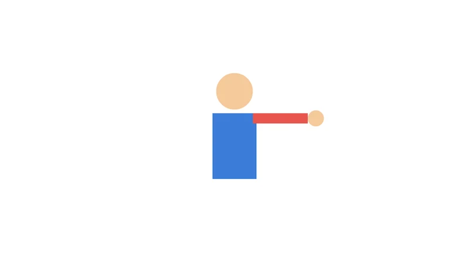

Tutorials
Rigging with layer parenting
Rig a character's arm and hand to its body with layer parenting, pose the rig, and choose what the children take on from their parents.
This page is also a lesson inside Phoenix: choose and start Rigging with layer parenting, and Phoenix points at each control as you go. It takes about 8 minutes.
To follow along here instead, download the starting document, layer-parenting.fla, and open it with .

In this tutorial you will rig a simple character with layer parenting: the hand follows the arm and the arm follows the body, the way a forearm follows the upper arm.
The document is ready: the body, the arm and the hand are symbol instances on layers of their own.
1. Parent the arm to the body
Right-click the Arm layer's name and choose Parent Layer > Body.
Nothing moves yet: the arm stays where it is, but from now on it follows the body.
2. Parent the hand to the arm
Right-click the Hand layer's name and choose Parent Layer > Arm. The hand now follows the arm, and through it the body.
The linked-circles button at the top right of the layer list shows the links as lines, and lets you drag a layer's handle onto its parent instead.
3. Move the body
Press V for the Selection tool and drag the body across the stage. The arm and the hand come along.
4. Pick the Free Transform tool
Press Q, or click the Free Transform tool in the toolbox.
5. Raise the arm
Click the arm to select it. Then drag from just outside a corner handle of its box to rotate it, so the arm points up. It turns at the shoulder, where its transformation point is, and the hand turns with it.
6. Lean the body
Click the body and rotate it a little the same way. The whole rig leans together: the arm keeps its pose and the hand stays on the end of it.
7. Scale the body
With the body selected, drag a corner handle outward to make it bigger. The arm and the hand grow with it, as children take on their parent's scale by default.
8. Choose what the arm follows
Right-click the Arm layer's name and choose Properties.... Under Follow parent's, uncheck Scale and click OK.
A child always follows its parent's position and rotation; Scale, Skew and Flip are yours to choose. The arm may change size on the stage, as it no longer takes on the body's scale.
9. Scale the body again
Select the body and scale it again. Now the arm and the hand still move and turn with it, but keep their size.
What you did
You rigged a body, arm and hand with layer parenting, posed the rig by moving and rotating the parents, and chose which parts of a parent's transform a child follows.
To set a layer free, choose Parent Layer > None. There are more tutorials, such as Motion tweens and the Motion Editor.
For everything this tutorial touches on, see Timeline and layers.